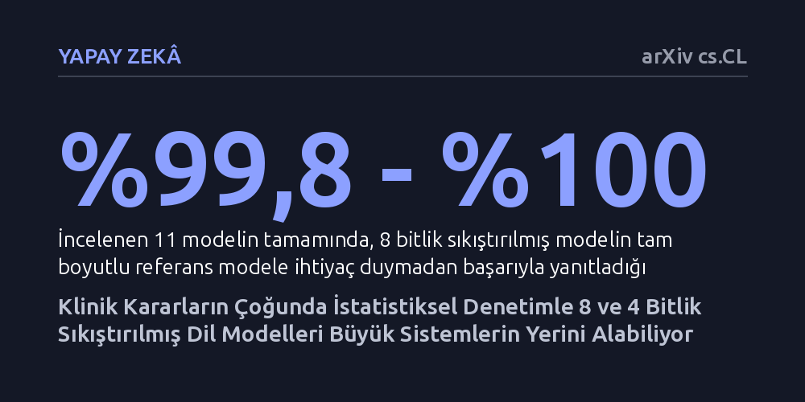

YAPAY-ZEKA · arXiv cs.CL · 2026-10-22
Araştırmacılar, klinik kararlarda pahalı büyük modeller yerine sıkıştırılmış dil modellerinin güvenle kullanılıp kullanılamayacağını CERTA adlı istatistiksel güvence yöntemiyle inceledi. Sonuçlar, 8 bitlik modellerin kararların neredeyse tamamını karşılayabildiğini, 4 bitlik modellerin ise donanım maliyetini yaklaşık yüzde yetmiş düşürdüğünü gösterdi.
Hastanelerin devasa sunucu altyapılarına bağımlı kalmadan, tek bir hızlandırıcı kart üzerinde istatistiksel güvenceyle çalışan sıkıştırılmış modellerle güvenilir klinik kararlar alabileceğini gösterir.

Yapay zeka modelleri sağlık alanında hasta kayıtlarını incelemekten tanı ve tedavi kararlarını doğrulamaya kadar giderek daha fazla sorumluluk üstleniyor. Ancak klinik alanda yüksek başarı gösteren en yetenekli dil modelleri genellikle onlarca milyar parametreye sahip ve bu modelleri yerel sunucularda çalıştırmak çok sayıda pahalı grafik işlemci (GPU) gerektiriyor. Birçok sağlık kuruluşu hasta verilerinin mahremiyetini korumak amacıyla bulut sistemleri yerine kendi bünyesindeki sunucuları kullanmak istese de, gereken yüksek bütçeli donanım altyapısı bu teknolojilerin yaygınlaşmasını zorlaştırıyor.
Bu durum pratik bir soruyu gündeme getiriyor: Verilen her klinik karar için gerçekten devasa ve tam hassasiyetli bir modeli çalıştırmak şart mı, yoksa daha küçük veya sıkıştırılmış modeller yeterli olabilir mi? Sağlık gibi hata payının hayati sonuçlar doğurabileceği bir alanda modelleri rastgele küçültmek kabul edilemez bir risk taşır. Araştırmacılar, model küçültmeyi körlemesine bir tercih olmaktan çıkarıp hangi kararın küçük modelle çözülebileceğini, hangi kararın ise büyük modele devredilmesi gerektiğini belirleyen bir denetim mekanizması kurmayı hedefliyor.
Araştırma ekibi bu dengeyi sağlamak amacıyla CERTA adını verdikleri karar düzeyinde bir istatistiksel güvence çerçevesi geliştirdi. Bu sistem, sayısal hassasiyeti 8 veya 4 bite düşürülmüş (nicemlenmiş) bir modelin, tam hassasiyetli (BF16 standardındaki) referans modelin yerine geçebileceği anları matematiksel olarak tespit ediyor. Sıkıştırılmış model bir klinik kararda belirlenen güven düzeyini sağlayamadığında, sistem bu kararı otomatik olarak tam boyutlu referans modele yönlendiriyor.
Yöntemin geçerliliğini sınamak için üç ayrı model ailesinden 7 ila 72 milyar parametre büyüklüğünde 11 farklı dil modeli incelendi. Değerlendirmede, 2.484 hastadan elde edilen ve kişisel verilerden arındırılmış 2.500 klinik doğrulama kararı kullanıldı. Yanıltıcı sonuçların önüne geçmek amacıyla, modellerin kalibrasyonunda kullanılan hasta verileri ile nihai testlerin yapıldığı hasta verileri birbirinden tamamen ayrı tutuldu.
Elde edilen bulgular, 8 bitlik modellerin klinik doğrulama kararlarında şaşırtıcı derecede yüksek bir güvenilirlikle çalıştığını ortaya koydu. İncelenen 11 modelin tamamında, 8 bitlik yuvarlanmış modeller test edilen kararların yüzde 99,8 ila yüzde 100'ünü büyük referans modele yönlendirmeye gerek kalmadan başarıyla karşıladı. Bu sonuç, çoğu standart klinik doğrulama görevi için tam boyutlu modellerin sürekli devrede kalmasına gerek olmadığını gösteriyor.
Daha ileri düzey bir sıkıştırma sunan 4 bitlik modellerde ise donanım maliyeti tarafında belirgin kazanımlar sağlandı. 72 milyar parametrelik Qwen2.5 ve HuatuoGPT-o1 modellerinde işlem maliyeti, tam hassasiyetli modele kıyasla sırasıyla yüzde 25,8 ve yüzde 27,3 seviyelerine kadar geriledi. Ayrıca bu modellerin en yüksek bellek kullanımı 42,7 ve 43,0 gigabayt olarak ölçülerek 48 gigabaytlık tek bir kurumsal hızlandırıcı kartın sınırları içinde kaldı. Ancak harici hastalık tanıma testlerinde 4 bitlik modellerin F1 başarı puanında ortalama 0,045'lik bir değişim ve modellere göre belirgin dalgalanmalar saptandı.
Bu çalışma, model sıkıştırmayı sabit bir hassasiyet tercihi olmaktan çıkarıp riskin kontrol altında tutulduğu dinamik bir işletim politikasına dönüştürüyor. Sağlık kuruluşları, her klinik soru için birden çok pahalı grafik işlemci çalıştırmak yerine, vakaların büyük bölümünü tek bir hızlandırıcı kart üzerinde çalışan sıkıştırılmış modellerle yanıtlayabilir; yalnızca sistemin emin olamadığı karmaşık vakalarda büyük modeli devreye sokabilir. Bu yaklaşım, yerel klinik yapay zeka altyapılarının maliyetini ciddi oranda aşağı çekme potansiyeline sahiptir.
Bununla birlikte çalışmanın önemli sınırları göz ardı edilmemelidir. Çalışma henüz bağımsız bilim insanlarının hakem denetiminden geçmemiş bir önbaskıdır. Ayrıca 72 milyar parametreli modellerin tek bir 48 gigabaytlık kart üzerindeki teorik bellek uygunluğu hesaplanmış olsa da, bu donanım üzerinde doğrudan bir klinik uygulama testi yapılmamıştır. Bu nedenle elde edilen veriler umut verici bir çerçeve sunsa da, klinik ortamda hasta bakımına doğrudan entegre edilmeden önce daha geniş saha testlerine ihtiyaç duymaktadır.